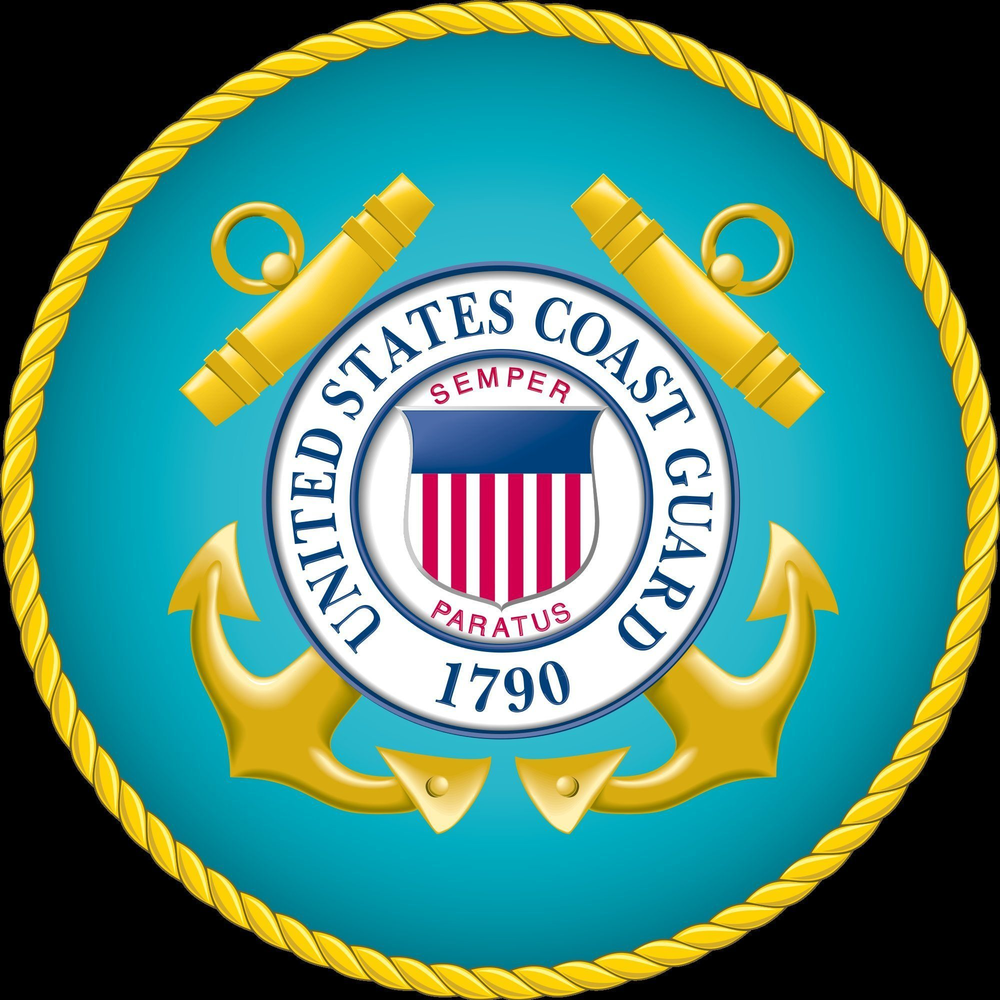

- Zachary Houghton
- Home
- Experience
- Portfolio
My current home is Rocky Point, North Carolina.
I’m a web developer in training who has spent the better part of 20 years working on and tinkering with computers in my spare time. As someone in the military I've had the opportunity to live on both the West and East Coast, and I find myself most comfortable with the slower pace of life in the south. I’m excited to bring my passion for the web and my military experience to every project that I touch, and hope to someday make web development my full time career.
I’m proud to be serving my country in the United States Coast Guard as a Firearms Instructor.
I want to master the process of designing and building web sites and increase my knowledge, skills and abilities in:
My goal is to find a company in the firearms or shooting industry that is looking for a junior web developer to grow with the company. I have a passion for firearms and with over 10 years experience, I would be able to bring my real world military, instruction, and shooting experience to any company in the industry.